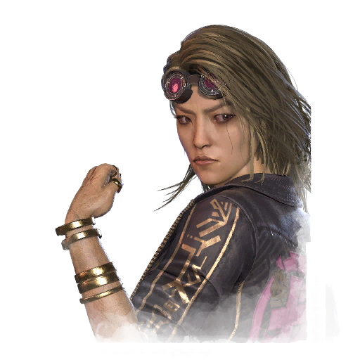

木村唯 Yui Kimura
- 性别
- 女性
- 出身
- 日本人
- 演员
- Daniela Pinto (BHVR)
背景故事
尽管成长于传统家庭，木村唯却在故乡飞驒与人飙车竞速，并赢得了"凭很少的东西就能做到不可能之事"的名声。父亲尽力引导她远离那些在他看来属于男性领域的 pursuits，而祖母却偷偷把祖父的工程师手册，以及关于汽车与摩托车引擎的笔记给了她。唯翻阅祖父的手册，进步神速。她不仅能保养自己的踏板车，还改装了引擎，让自己在越野摩托的较量中足以与年长的男孩们一较高下。她把祖父留下的"幸运头巾"缠在手臂上，与当地的男孩们比赛，而他们无法跟上她的速度，于是联手策划要让她落败。可他们没有这个运气。唯在每个弯道都把他们甩在身后，成为所有朋友口中的传奇人物。
到了申请入学的时候，唯鼓起勇气，向父亲坦白自己立志要成为摩托车手。一场争吵随之爆发；当唯拒绝去申请一个像样的学位时，父亲深感羞耻，告诉她这个家不再欢迎她。怀着沉重的心情，唯带着祖母的祝福与积蓄前往名古屋。
名古屋并不像唯想象的那样。她只能找到些低档的文书工作，或是做女招待之类的零工。用祖母给她的最后一点钱，她买了一辆竞赛用摩托，投身非法的街头赛事，在那里赢下了从未拥有过的巨款。关于她勇气与胆识的传闻……
专属技能
通用技能 任意逃生者均可使用
寻宝专家
Artefact Hunter
执念之缚
Bound by Obsession
黑暗感知
Dark Sense
坚持到底
Down to the Last
似曾相识
Déjà Vu
希望
Hope
同族
Kindred
最后站立
Last Standing
轻装上阵
Lightweight
不抛弃任何人
No One Left Behind
过度自信
Overconfidence
掠夺者直觉
Plunderer's Instinct
预兆
Premonition
韧性
Resilience
滑溜之躯
Slippery Meat
小猎手
Small Game
背脊发凉
Spine Chill
这不是真的
This Is Not Happening
硬跑者
Tough Runner
我们能行
We'll Make It
求生意志
Will to Live
附加品
- 暂无数据。